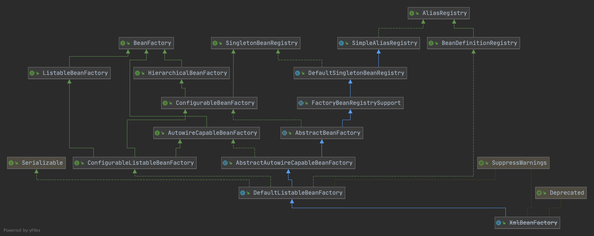

发布于
SpringIOC整体设计
从接口开始

先来看看4个接口BeanFactory、SingletonBeanRegistry、AliasRegistry、BeanDefinitionRegistry
AliasRegistry定义了别名的接口而BeanDefinitionRegistry继承了AliasRegistry意味着BeanDefinitionRegistry也拥有别名的能力，另外他还扩展了注册BeanDefinition的能力。而SingletonBeanRegistry是一个单例的注册器被注册的是类的实例而不是定义。SingletonBeanRegistry、AliasRegistry、BeanDefinitionRegistry三个接口定义了3种注册器的能力。在本文中我们把这些接口统称为注册器。
再来看看BeanFactory他实际上主要定义了了对Bean的获取的能力根据名称获取或者是根据类型匹配获取。它的子接口定义了很多对工厂内部Bean查看管理的能力。这里要注意ConfigurableBeanFactory因为它继承了SingletonBeanRegistry，在这个接口之前实际上BeanFactory没有定义任何向工厂注册Bean的能力。
我们梳理一下Factory定义了对获取Bean及其配置信息的能力，而Registry定义了注册Bean的能力。
工厂初始化
XmlBeanFactory实际上已经被废弃但是我们可以从它入手学习会更简单，我们先来看一下XmlBeanFactory的源码。其实非常简单重点在与DefaultListableBeanFactory和XmlBeanDefinitionReader上面，本文主要讲解IOC的实现原理对于怎么解析Bean的XML文件不会过多讲解，毕竟这个时代没有人会直接使用spring-beans包，和传统的XML文件定义类。
//DefaultListableBeanFactory实现了之前提到的接口，它提供了一个完整的IOC实现
public class XmlBeanFactory extends DefaultListableBeanFactory {
//XmlBeanDefinitionReader实现了XML的解析并且注册到Factory
private final XmlBeanDefinitionReader reader = new XmlBeanDefinitionReader(this);
public XmlBeanFactory(Resource resource) throws BeansException {
this(resource, null);
}
public XmlBeanFactory(Resource resource, BeanFactory parentBeanFactory) throws BeansException {
super(parentBeanFactory);
//加载xml文件，解析并且注册到工厂
this.reader.loadBeanDefinitions(resource);
}
}
我们从this.reader.loadBeanDefinitions(resource);这行代码往下跟踪找到了第一个需要关注的地方
private void parseDefaultElement(Element ele, BeanDefinitionParserDelegate delegate) {
//处理IMPORT
if (delegate.nodeNameEquals(ele, IMPORT_ELEMENT)) {
importBeanDefinitionResource(ele);
}
//处理别名
else if (delegate.nodeNameEquals(ele, ALIAS_ELEMENT)) {
processAliasRegistration(ele);
}
//处理bean
else if (delegate.nodeNameEquals(ele, BEAN_ELEMENT)) {
processBeanDefinition(ele, delegate);
}
//处理beans 递归调用之前的
else if (delegate.nodeNameEquals(ele, NESTED_BEANS_ELEMENT)) {
// recurse
doRegisterBeanDefinitions(ele);
}
}
importBeanDefinitionResource和doRegisterBeanDefinitions还是XML解析的实现与IOC本身无关我们忽略它。首先我们来看看别名的注册
protected void processAliasRegistration(Element ele) {
//获取元素
String name = ele.getAttribute(NAME_ATTRIBUTE);
String alias = ele.getAttribute(ALIAS_ATTRIBUTE);
boolean valid = true;
//校验
if (!StringUtils.hasText(name)) {
getReaderContext().error("Name must not be empty", ele);
valid = false;
}
if (!StringUtils.hasText(alias)) {
getReaderContext().error("Alias must not be empty", ele);
valid = false;
}
//有效导入无效忽略
if (valid) {
try {
//注册别名 重点在这里 getReaderContext().getRegistry()获取的就是XmlBeanFactory本身
getReaderContext().getRegistry().registerAlias(name, alias);
}
catch (Exception ex) {
getReaderContext().error("Failed to register alias '" + alias +
"' for bean with name '" + name + "'", ele, ex);
}
//别名事件触发
getReaderContext().fireAliasRegistered(name, alias, extractSource(ele));
}
}
registerAlias方法实现了别名的注册回想一下之前说过的AliasRegistry接口这个方法就是在这里定义的。具体的功能都是在SimpleAliasRegistry类中实现的。XmlBeanFactory继承了这个类。本质就是一个aliasMap的ConcurrentHashMap实现的大家可以自己去看一下源码这里就不展开说了。
再来看一下processBeanDefinition
//registry就是XmlBeanFactory本身
protected void processBeanDefinition(Element ele, BeanDefinitionParserDelegate delegate) {
//解析bean定义
BeanDefinitionHolder bdHolder = delegate.parseBeanDefinitionElement(ele);
if (bdHolder != null) {
//自定义装饰器扩展
bdHolder = delegate.decorateBeanDefinitionIfRequired(ele, bdHolder);
try {
//注册到工厂 同时也会组册别名
BeanDefinitionReaderUtils.registerBeanDefinition(bdHolder, getReaderContext().getRegistry());
}
catch (BeanDefinitionStoreException ex) {
getReaderContext().error("Failed to register bean definition with name '" +
bdHolder.getBeanName() + "'", ele, ex);
}
// 发送注册事件
getReaderContext().fireComponentRegistered(new BeanComponentDefinition(bdHolder));
}
}
class BeanDefinitionReaderUtils{
public static void registerBeanDefinition(
BeanDefinitionHolder definitionHolder, BeanDefinitionRegistry registry)
throws BeanDefinitionStoreException {
// 组册类定义
String beanName = definitionHolder.getBeanName();
registry.registerBeanDefinition(beanName, definitionHolder.getBeanDefinition());
// 注册别名
String[] aliases = definitionHolder.getAliases();
if (aliases != null) {
for (String alias : aliases) {
registry.registerAlias(beanName, alias);
}
}
}
}
我们可以看到这里的registerBeanDefinition方法就是在BeanDefinitionRegistry接口中定义的，BeanDefinitionRegistry还继承了AliasRegistry所以它当然可以注册别名。registerBeanDefinition的实现在DefaultListableBeanFactory类中，主要就是对一个名为beanDefinitionMap的对象操作，大家可以自行去阅读源码这里就不贴代码了。
注：fireAliasRegistered和fireComponentRegistered不会再本文中提及后续会单独写一篇文章去介绍它，本文为了让读者更专注IOC的核心功能实现。
到目前为止，我们可以知道XmlBeanDefinitionReader的本质就是调用注册器把解析到的信息注册到容器中。
获取一个Bean
当我们执行一行获取Bean的代码时
Map<String, BeanA> beansOfType = xmlBeanFactory.getBeansOfType(BeanA.class);
BeanA beanA = (BeanA)xmlBeanFactory.getBean("beanA");
最终都掉用了AbstractBeanFactory类的doGetBean方法，这个方法的实现比较复杂，大家需要有点耐心看下去。为了阅读方便这里删除了log的代码
protected <T> T doGetBean(
String name, @Nullable Class<T> requiredType, @Nullable Object[] args, boolean typeCheckOnly)
throws BeansException {
//可能是别名翻译一下 名字包含&前缀去除掉
String beanName = transformedBeanName(name);
Object bean;
//可能有直接注册实例对象的或者已经被创建的单例
//这里要提及几个核心的Map
//singletonObjects Map中的Bean已经完全初始化好了，可以直接使用
//earlySingletonObjects Map中的Bean处在创建中
//singletonFactories Map中存放Bean对应的工厂
//这里会先从singletonObjects中获取 如果没有根据singletonsCurrentlyInCreation判断是否在创建中，不是直接返回null
//如果是创建中从earlySingletonObjects中获取
//如果也没有获取到获取singletonObjects的对象锁然后从singletonFactories中获取工厂并且创建
Object sharedInstance = getSingleton(beanName);
if (sharedInstance != null && args == null) {
bean = getObjectForBeanInstance(sharedInstance, name, beanName, null);
}
else {
//检查是不是有循环依赖
if (isPrototypeCurrentlyInCreation(beanName)) {
throw new BeanCurrentlyInCreationException(beanName);
}
// 检查一下 如果工厂没有定义这个bean就看一下父工厂
BeanFactory parentBeanFactory = getParentBeanFactory();
if (parentBeanFactory != null && !containsBeanDefinition(beanName)) {
// Not found -> check parent.
String nameToLookup = originalBeanName(name);
if (parentBeanFactory instanceof AbstractBeanFactory) {
return ((AbstractBeanFactory) parentBeanFactory).doGetBean(
nameToLookup, requiredType, args, typeCheckOnly);
}
else if (args != null) {
// Delegation to parent with explicit args.
return (T) parentBeanFactory.getBean(nameToLookup, args);
}
else if (requiredType != null) {
// No args -> delegate to standard getBean method.
return parentBeanFactory.getBean(nameToLookup, requiredType);
}
else {
return (T) parentBeanFactory.getBean(nameToLookup);
}
}
//校验
if (!typeCheckOnly) {
/* 如果创建bean不是为了类型检查，则要标记当前bean已经被创建或者即将被创建以便于BeanFactory可以优化重复创建的bean的缓存 */
markBeanAsCreated(beanName);
}
StartupStep beanCreation = this.applicationStartup.start("spring.beans.instantiate")
.tag("beanName", name);
try {
if (requiredType != null) {
beanCreation.tag("beanType", requiredType::toString);
}
//大家应该记得之前注册的BeanDefinition吧，getMergedLocalBeanDefinition内部获取BeanDefinition后
//会去查看是否有Parent BeanDefinition有的话继承它的属性 没有的话把自己包装成一个RootBeanDefinition
RootBeanDefinition mbd = getMergedLocalBeanDefinition(beanName);
checkMergedBeanDefinition(mbd, beanName, args);
// Guarantee initialization of beans that the current bean depends on.
// 处理依赖 如果有配置DependsOn这里会先初始化依赖类
String[] dependsOn = mbd.getDependsOn();
if (dependsOn != null) {
for (String dep : dependsOn) {
//利用dependentBeanMap可以判断出是否循环依赖
if (isDependent(beanName, dep)) {
throw new BeanCreationException(mbd.getResourceDescription(), beanName,
"Circular depends-on relationship between '" + beanName + "' and '" + dep + "'");
}
registerDependentBean(dep, beanName);
try {
//递归调用 先创建依赖类
getBean(dep);
}
catch (NoSuchBeanDefinitionException ex) {
throw new BeanCreationException(mbd.getResourceDescription(), beanName,
"'" + beanName + "' depends on missing bean '" + dep + "'", ex);
}
}
}
// 如果是单例Bean
if (mbd.isSingleton()) {
//看下面单独介绍 创建一个单例对象并且返回
sharedInstance = getSingleton(beanName, () -> {
try {
//利用注册的信息创建Bean
//createBean中实现了lookup-method和replace-method
//和BeanPostProcessor
//以及创建实例
//填充属性 AutoWrite也是这里实现的
return createBean(beanName, mbd, args);
}
catch (BeansException ex) {
// Explicitly remove instance from singleton cache: It might have been put there
// eagerly by the creation process, to allow for circular reference resolution.
// Also remove any beans that received a temporary reference to the bean.
destroySingleton(beanName);
throw ex;
}
});
//同上
bean = getObjectForBeanInstance(sharedInstance, name, beanName, mbd);
}
else if (mbd.isPrototype()) {
// It's a prototype -> create a new instance.
Object prototypeInstance = null;
try {
beforePrototypeCreation(beanName);
prototypeInstance = createBean(beanName, mbd, args);
}
finally {
afterPrototypeCreation(beanName);
}
bean = getObjectForBeanInstance(prototypeInstance, name, beanName, mbd);
}
//自定义scope扩展
else {
String scopeName = mbd.getScope();
if (!StringUtils.hasLength(scopeName)) {
throw new IllegalStateException("No scope name defined for bean ´" + beanName + "'");
}
Scope scope = this.scopes.get(scopeName);
if (scope == null) {
throw new IllegalStateException("No Scope registered for scope name '" + scopeName + "'");
}
try {
Object scopedInstance = scope.get(beanName, () -> {
beforePrototypeCreation(beanName);
try {
return createBean(beanName, mbd, args);
}
finally {
afterPrototypeCreation(beanName);
}
});
bean = getObjectForBeanInstance(scopedInstance, name, beanName, mbd);
}
catch (IllegalStateException ex) {
throw new ScopeNotActiveException(beanName, scopeName, ex);
}
}
}
catch (BeansException ex) {
beanCreation.tag("exception", ex.getClass().toString());
beanCreation.tag("message", String.valueOf(ex.getMessage()));
cleanupAfterBeanCreationFailure(beanName);
throw ex;
}
finally {
beanCreation.end();
}
}
// Check if required type matches the type of the actual bean instance.
// 检查类型是否符合
if (requiredType != null && !requiredType.isInstance(bean)) {
try {
T convertedBean = getTypeConverter().convertIfNecessary(bean, requiredType);
if (convertedBean == null) {
throw new BeanNotOfRequiredTypeException(name, requiredType, bean.getClass());
}
return convertedBean;
}
catch (TypeMismatchException ex) {
if (logger.isTraceEnabled()) {
logger.trace("Failed to convert bean '" + name + "' to required type '" +
ClassUtils.getQualifiedName(requiredType) + "'", ex);
}
throw new BeanNotOfRequiredTypeException(name, requiredType, bean.getClass());
}
}
return (T) bean;
}
总结
SpringIOC大体上抽象成了两个部分一个注册器，一个是工厂，工厂通过注册器提供的信息创建Bean。
IOC的实现其实十分复杂，这里只是做了简单的概念性介绍，后续会单独去讲解BeanPostProcessor接口提供的扩展能力、各种事件通知、Aware接口、Bean初始化流程等等。